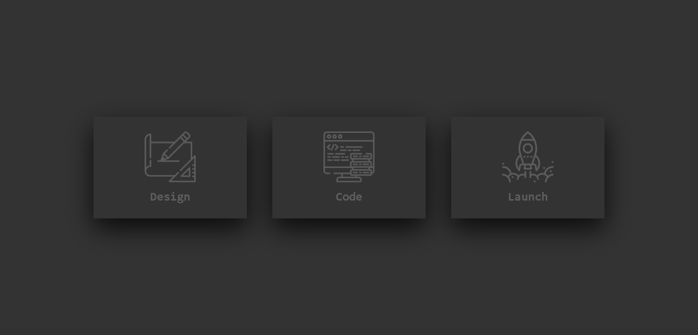

Olivera Guillermo
Desarrolador Jr
Funcionó en mi máquina,supngo que funcionara en la tuya.
Mi experiencia en la programación
Desde pequeño siempre me llamó la atención la tecnología y la informática. A medida que fui creciendo, empecé a interesarme más en cómo funcionan los ordenadores y cómo se crean las aplicaciones que usamos todos los días.
Aprendí a programar por mi cuenta a través de cursos en línea y tutoriales en YouTube. Me gustó tanto que decidí estudiar una carrera relacionada con la informática para seguir aprendiendo y creciendo en el campo de la programación.
Actualmente sigo formandome y buscando proyctos en los cuales aportar de mi.
Cards
Mi proyecto de "cards" en CSS es una galería de imágenes que presenta una selección de mis fotografías favoritas. Cada imagen se presenta en una tarjeta con un borde redondeado y una sombra para dar profundidad, y contiene información sobre la imagen como su título y una breve descripción. Para lograr esto, utilicé HTML para estructurar las tarjetas y CSS para aplicar estilos y diseños personalizados. Utilicé técnicas de diseño responsivo para que la galería se vea bien en diferentes tamaños de pantalla, y también agregué animaciones y transiciones para darle un toque más dinámico y atractivo. En general, mi proyecto de "cards" en CSS me permitió experimentar con diferentes técnicas de diseño y poner en práctica mis habilidades en HTML y CSS para crear una galería visualmente atractiva y funcional.
Ver proyectoLogin Page
He estado utilizando HTML, CSS y JavaScript para crear diferentes secciones en la página que muestren mis habilidades en diseño web, desde galerías de imágenes hasta formularios interactivos. También he estado trabajando en un blog en el que publicaré artículos sobre diseño web, tecnología y programación.
Ver proyectoReloj Digital
Este proyecto se enfocó en el desarrollo de un reloj digital que podía ser utilizado en diferentes dispositivos y plataformas. Utilicé HTML, CSS y JavaScript para crear una interfaz atractiva y funcional, que permitía mostrar la hora actual en diferentes formatos y configuraciones. El objetivo era crear un reloj digital versátil y fácil de usar, que pudiera ser utilizado en diferentes contextos y situaciones.
Ver proyectoRadio Online

Este proyecto consistió en la creación de una radio online en la que se transmitían programas en vivo y se compartían contenidos relacionados con la música y la cultura. Para ello, utilicé diferentes herramientas y tecnologías para diseñar y desarrollar la página web, así como para crear la programación y los contenidos de la radio.
Ver proyectoGenerador de Claves

Este proyecto consistió en la creación de un generador de claves seguras.
Ver proyecto